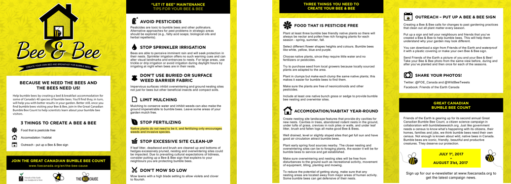
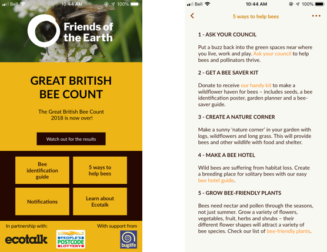
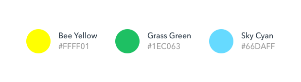
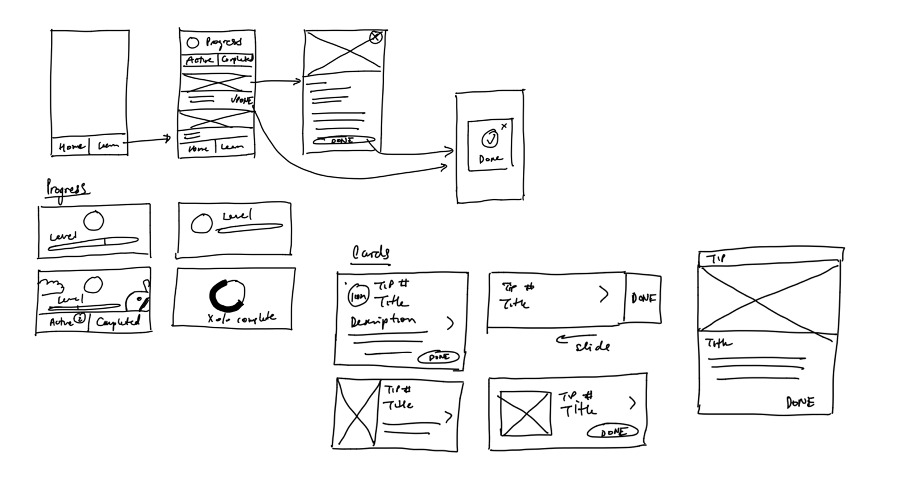
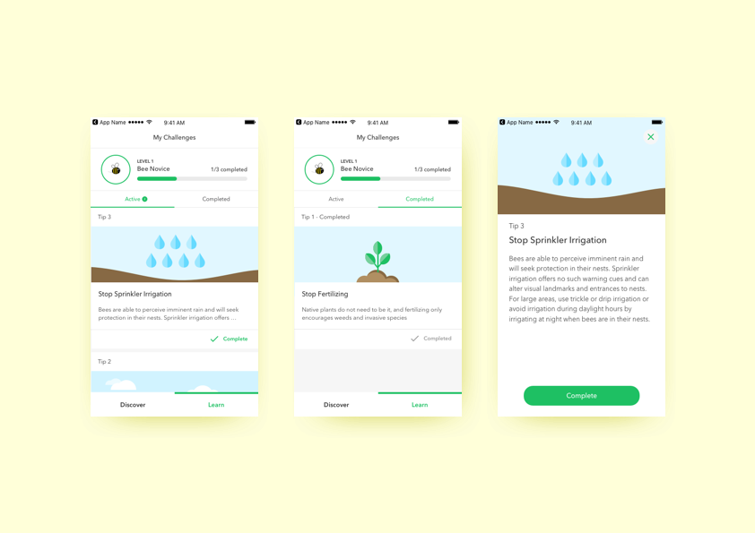
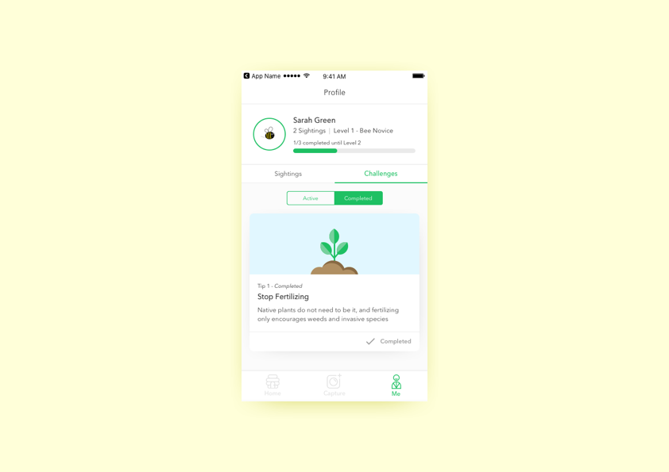

Friends of the Earth Canada
This mobile citizen app crowdsources bee data collection to help conduct research and protect the bee population.
_______OVERVIEW
About the Project
Timeline: 1 month
Team: UW Blueprint Club - 3 developers, 1 other designer (his feature not shown)
Role: Interaction Design, Visual Design, User Interviews
Introduction
This mobile app was designed and built for Friends of the Earth Canada, an non-profit organization focusing on environmental conservation. This was one of the projects for UW Blueprint, a group of students at the University of Waterloo dedicated to building technology for social good - free of charge.
Problem
One of organization’s initiatives is The Bee Cause which aims to raise awareness about the importance of bee diversity and preservation. The UK chapter already has a mobile app that teaches users about ways to protect bumble bee habitats and collects sighting data from users for scientists to analyze bee population and migration patterns. The current solution for the Canadian chapter is a lengthy web form for the submission process and other links on their website on other ways people can help protect bees.
My Role
The part of the problem I worked on was the educational aspect of teaching app users how to be more bee-friendly in their daily lives and to solve how to motivate them. The submission process was worked on by another part of the team.
UNDERSTANDING THE PROBLEM
Research
The research started with a phone call with a member of the organization who was involved with The Bee Cause to ask about target demographic, the existing solution and pain points, what they imagined for the new solution and a walk through of how it works.
Initial Call Notes
(For the part I was working on, some of the information I gathered)
- Current way of educating users on how to help bees are links to pdfs on website, presented after bee sighting submission (web form)
- Submissions are from users age 24-55, typically female
- This app should be designed for users that are new to the app world, should be simple to use
- The learn feature should have tips similar to the provided list (image below)
- Tip sheets on how to take good pictures of bees
- Gardening tips on creating a Bee&Bee
- Long guide books, want to break down into small tips
- Learn feature should motivate users to help (possibly gamification aspect)
Current Tip Sheets on Website

{kind=link}
This is an example of a PDF tip sheet they offer on their website currently.
Other Branch's App - Friends of the Earth UK

{kind=link}
This is the learn more section on the FOE UK app. It is just a single screen of tips.
Colours
The 3 main colours that we chose were blue, yellow and green. Green is the colour of the global organization logo, and the yellow is on most promotional materials on their pamphlets so we wanted to keep consistent branding. The blue is another colour they tend to use on their website for the water of the earth and other links. We kept the colours bright so the app looks more fun and engaging.

{kind=link}
ITERATION ONE
Solution
The solution our team decided on for the learn feature was a gamified tips/tasks section in the app. Users will be notified of weekly tasks to complete which can be finished whenever for ways they can help bee preservation. To keep users motivated, they will have a “level” that is related to how many tasks they completed.
Wireframe
{kind=link}
Iteration 1 Mocks
{kind=link}
Users can keep track of their active tasks and completed tasks by navigating between the tabs. They can also tap into the tip to read more about it.
Feedback from Organization
The team hopped onto a call with the non-profit to get feedback about the submission flow and this learn feature. Some of the feedback gathered:
- Overall, positive feedback and the organization members really liked the app
- Some Improvements/Suggestions
- Adding a ‘remind me’ feature for challenges/tips (decided out of scope for MVP by team)
- Want a share button to social media when the task has been completed
- Want to see modal for when they advance to next level
- Try out different card styles
- Change some of the copy
ITERATION 2
Iteration 2 Mocks
{kind=link}
After getting feedback for the submission flow and learn feature, our team restructured the navigation of the app to have Home, Capture and Me. The Learn feature now lives under the Me tab which is a profile page that also keeps track of all bee sighting submissions.
For iteration 2, since the page is being shared with sightings, I moved the active and completed challenges into a segmented tab bar. I also changed the copy to specify how many tasks were needed to achieve the next level since previously, the wording was ambigious.
{kind=link}
A challenge can be completed by pressing the complete button on the list of all challenges, or the individual card that displays more information.
When it has been completed, a modal comes up which prompts users to share on media to raise more awareness!
{kind=link}
The levelling up aspect of the challenges serves as a gamified way to keep users engaged with helping the environment.
What I Learned
I learned a lot from this experience since I got to work with a real client, get feedback, conduct interviews to understand their needs better and then go through an iterative design process with another team member.
Check out my Other Projects